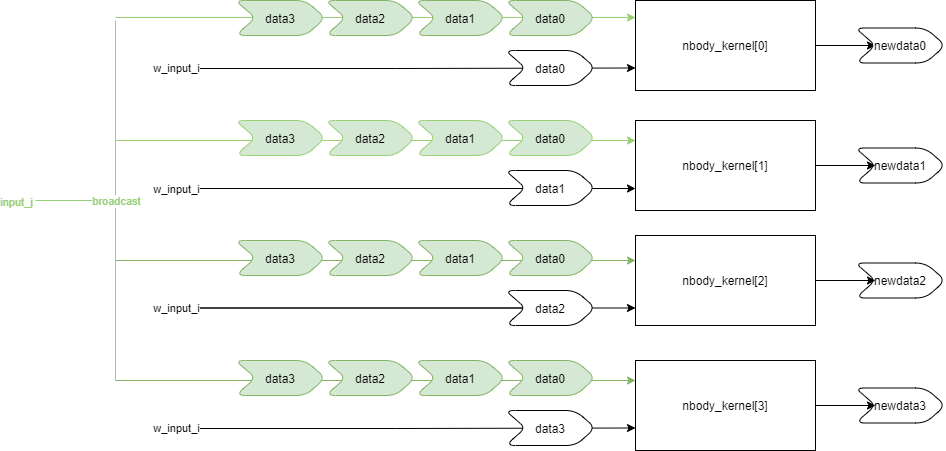

Estimated time: 2 hours
make aie
or
aiecompiler -v --target=hw \
--stacksize=2000 \
-include="$(XILINX_VITIS)/aietools/include" \
-include="./" \
-include="./src" \
-include="../data" \
nbody_x4_100.cpp \
-workdir=work
The following AI Engine features are used in this design:
single precision floating-point compute of the N-Body gravity equations on 12,800 particles
400 tile design with 400 parallel accelerators
1:400 broadcast stream
1:4 packet split
4:1 packet merge
PL Kernels designed to support packet switching in AI Engine
Review the src/nbody.cc file. It contains the implementation of a single AI Engine kernel mapped to a single AI Engine tile called nbody(). This kernel takes in the x y z vx vy vz m values for 32 particles, computes the N-Body gravity equations for a single timestep, and outputs the new x y z vx vy vz m values for the 32 particles. This kernel takes in two inputs: w_input_i and w_input_j. The w_input_i window contains the x y z vx vy vz m floating point values for 32 particles. The w_input_j window contains the only x y z m floating-point values for the same 32 particles. This kernel produces one output: w_output_i which contains the new x y z vx vy vz m floating-point values for the 32 particles in the next timestep.
| name | number of 32-bit data values |
|---|---|
w_input_i |
32 * 7 = 224 |
w_input_j |
32 * 4 = 128 |
w_output_i |
32 * 7 = 224 |

The nbody() kernel is sectioned into two major for loops. The first major for loop (around lines 38-61) calculates the new x y z positions for the 32 particles. The second major for loop (around lines 64-202) calculates the new vx vy vz velocities for the 32 particles. The output mass (m) values remain the same as the inputs. The w_output_i window is then sent to the transmit_new_i kernel (source: src/transmit_new_i.cc) to be written to the final output window.
Next, review the src/nbody_subsystem.h graph. This graph creates four N-Body kernels, a packet splitter kernel, and a packet merger kernel. Review the packet switching feature tutorial to learn more about the packet switching feature in the AI Engine: 04-packet-switching.
.PNG)
The nbody_subsystem graph has two inputs: input_i and input_j. The input_i port is a packet stream that connects to the packet splitter. The packet splitter redirects packets of data to the w_input_i port of each nbody() kernel. Each input_i packet contains a packet header, 224 32-bit data values, and TLAST asserted with the m31 data value. The input_j port is a data stream that is broadcast to all the nbody() kernels (i.e., all nbody() kernels receive the same input_j data). The nbody() kernels perform their computations and generate the new w_output_i data which is merged into a single stream of packets, resulting in the output of the nbody_subsystem graph output_i.
| Name | Number of 32-bit Data Values | Window Size (bytes) |
|---|---|---|
| input_i | 224 * 4 = 896 | 896 * 4 = 3584 bytes |
| input_j | 128 | 128 * 4 = 512 bytes |
| output_i | 224 * 4 = 896 | 896 * 4 = 3584 bytes |
A single instance of the nbody_subsystem graph can simulate 128 particles using four AI Engine tiles.
To calculate the N-Body gravity equations for 128 particles, each nbody() kernel calculates the N-Body gravity equations for 32 particles. However, in order to calculate acceleration and the new velocities, an nbody() kernel needs to know the data in the other kernels. For example, if particle 0 is mapped to nbody_kernel[0] and particle 32 is mapped to nbody_kernel[1], then nbody_kernel[0] needs to know the data in nbody_kernel[1] to accurately calculate the summation equation for acceleration and then calculate the new velocity of particle 0.
This is where the input_j stream plays a vital role in data sharing. Even though the input_j data stream has a window size for 32 particles worth of data, the LOOP_COUNT_J value can be set to allow the nbody() kernels to take in any number of 32 particles worth of data at a time. For a single instance of the nbody_subsystem graph, the LOOP_COUNT_J should be set to 4 to stream in data for all four kernels. For the final AI Engine graph, which contains 100 instances of the nbody_subsystem graph, the LOOP_COUNT_J value is set to 400 to stream in data for all 400 kernels to each nbody() kernel.

For example, to calculate the new velocity of particle 0 mapped in nbody_kernel[0], the nbody_kernel[0] can retrieve the data value of particle 32 from the input_j stream. This way, all nbody() kernels will have the data values for all other particles mapped in the other nbody() kernels through data streaming from input_j.
Review the nbody_x4_x100.h. It contains the definition of the nbodySystem graph which contains 100 instances of the nbody_subsystem graph. Each nbody_subsystem is mapped to four AI Engine tiles which each contain an nbody() kernel. Therefore, the nbodySystem graph contains 400 nbody() kernels using up all of the 400 available AI Engine tiles. Since each nbody() kernel simulates 32 particles, the nbodySystem simulates 12,800 particles (32 particles * 400 kernels). There are 100 input_i ports (input_i0-99) and a single input_j port. For 1 iteration, the input_i ports receive 4 packetized w_input_i data which are distributed to 4 nbody() kernels in each nbody_subsystem graph. The input_j is a 1:400 broadcast stream to the 400 w_input_j ports in the 400 nbody() kernels.
Review the nbody_x4_100.cpp file. It contains an instance of the nbodySystem graph and simulates it for one iteration. Also, review the data files in the data folder where you will find the input data files for the nbodySystem (input_i0-99.txt and input_j.txt) used by the nbodySystem graph.

Below is the implementation of the 100 compute unit on all 400 AI Engine tiles viewed on the Vitis Analyzer tool.

The red highlighted region encompasses four AI Engine tiles which contain a single compute unit.
Following is the graph visualization of a single compute unit on the Vitis Analyzer tool.

You might be curious about the need to implement the packet switching scheme 1:4/4:1. This was done to circumvent an AI Engine architecture limitation on the number of simultaneous input and output AXI-Streams allowed per AI Engine column. There are 50 AI Engine columns in the AI Engine array. Each column contains 8 AI Engine tiles. Each AI Engine column is allowed a maximum of 6 32-bit AXI-Stream inputs and 4 32-bit AXI-Stream outputs.
In the design, each nbody() kernel is mapped to an AI Engine tile. Meaning each column of 8 AI Engine tiles has 9 inputs streams and 8 output streams, violating these constraints.
8 w_input_i input streams
1 w_intput_j input stream
8 w_output_i output streams
With the 1:4/4:1 packet switching scheme, you can combine 4 streams into 1. Because packet switching is applied on the w_input_i ports, the number of input streams into a single AI Engine column is reduced to three:
1 input_i stream that goes to tiles 0-3 in a column
1 input_i stream that goes to tiles 4-7 in a column
1 input_j stream that is broadcasted to all the columns
On the output side, the number of output streams is reduced to two:
1 output_i stream coming from tiles 0-3 in a column
1 output_i stream coming from tiles 4-7 in a column
Estimated time: a few days
Run the following make command to invoke the aiesimulator.
make sim
After compiling the 100 compute unit N-Body Simulator design, you are ready to create the PL datamover kernels in the next module, Module 03 - PL Design.
GitHub issues will be used for tracking requests and bugs. For questions go to support.xilinx.com.
Licensed under the Apache License, Version 2.0 (the “License”); you may not use this file except in compliance with the License.
You may obtain a copy of the License at http://www.apache.org/licenses/LICENSE-2.0
Unless required by applicable law or agreed to in writing, software distributed under the License is distributed on an “AS IS” BASIS, WITHOUT WARRANTIES OR CONDITIONS OF ANY KIND, either express or implied. See the License for the specific language governing permissions and limitations under the License.
XD068 | © Copyright 2021 Xilinx, Inc.